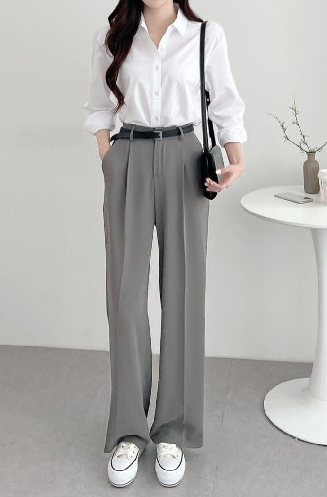
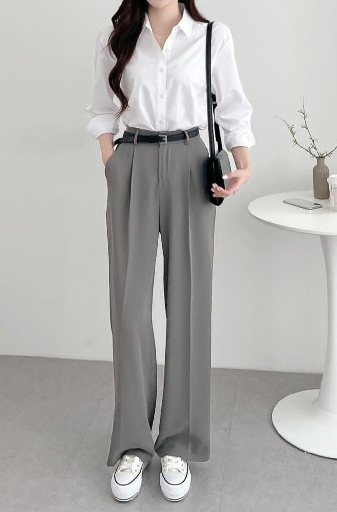

For a female with an inverted triangle body type, the goal is to balance the proportions by drawing attention to the lower body and creating curves around the hips and waist. The inverted triangle figure is characterized by broader shoulders and a narrower waist and hips. Here are some clothing recommendations to enhance this body type:

 
